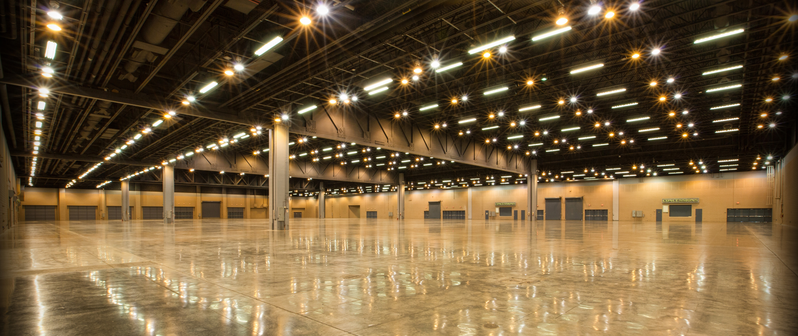

"Diponegoro Exhibition Halls"
The Diponegoro Exhibition Halls offer captivating spaces for a variety of events. Named after the Indonesian national hero Prince Diponegoro, these halls provide a modern and functional environment.
Diponegoro Hall, the primary exhibition space, impresses with its grand design and versatility. The hall's open layout and high ceilings create an inviting atmosphere, ideal for showcasing products and services creatively. Equipped with state-of-the-art facilities, Diponegoro Hall can accommodate large-scale exhibitions, trade shows, and conferences.
Adjacent to Diponegoro Hall is a complementary exhibition space that offers its own unique features. This hall, while slightly smaller, is perfect for smaller exhibitions, workshops, and networking events. Its flexible layout and modern infrastructure foster interaction and collaboration among participants.
Strategically located within the JCC, the Diponegoro Exhibition Halls benefit from excellent accessibility and a range of amenities. The central location in Jakarta allows for easy access, and the venue provides ample parking and top-notch catering services.
In summary, the Diponegoro Exhibition Halls at the JCC provide modern and versatile spaces for hosting a variety of events. With their impressive design, state-of-the-art facilities, and convenient location, these halls offer an ideal platform for exhibitions, trade shows, and conferences, ensuring a memorable experience for both organizers and attendees.